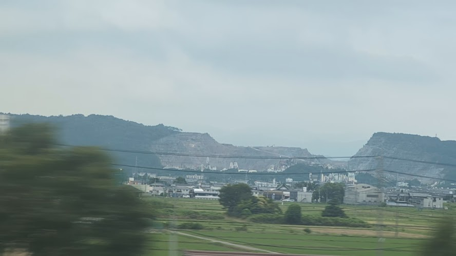

TOKAIDO SHINKANSEN WINDOW VIEW
When can you see Mt. Kinsho from the Shinkansen?
The vanished Gifu pyramid.

- Section
- Gifu-Hashima → Maibara, near Ogaki
- Seat side
- Seat E · mountain side
- Timing
- About 106 minutes after leaving Tokyo on a Nozomi train
- Photos
- 1 photos
Location at a glance
Open mapSatellite imagery helps you recognize nearby landmarks.
How to find Mt. Kinsho
After Gifu-Hashima, near Ogaki, a pale quarried mountainside appears on the Seat E side. Mt. Kinsho is a limestone mountain once known from the train window for a pyramid-like peak nicknamed the 'Gifu Pyramid.' That peak is no longer there. Long years of limestone quarrying have cut deeply into the mountain, leaving white rock faces exposed in stepped layers. The changed landscape itself is part of the story: a mountain reshaped by industry, caught in a few seconds from the Shinkansen.
If you are traveling from Tokyo toward Shin-Osaka, start watching the Seat E · mountain side window as you approach Gifu-Hashima → Maibara, near Ogaki. If you are traveling toward Tokyo, the order is reversed.
Why this view matters
Mt. Kinsho is one of the window views that make the Tokaido Shinkansen more than a transfer. The train moves fast, so visibility depends on weather, seat position, and timing.